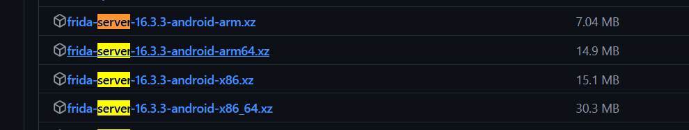
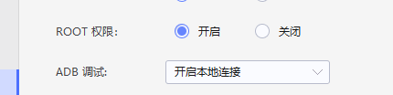
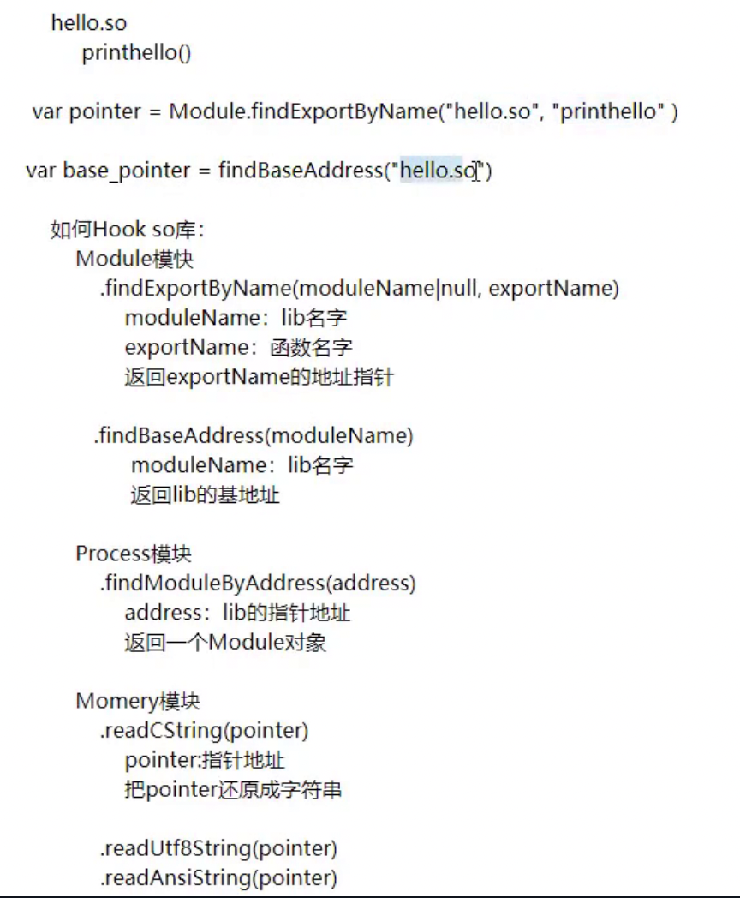
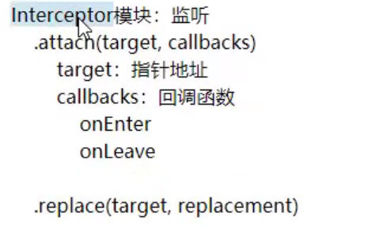

Frida-Hook
Frida-Hook
Frida概念
Frida是一款开源的动态插桩工具，可以插入一些代码到原生App的内存空间去动态地监视和修改其行为，支持Windows、Mac、Linux、Android或者iOS，从安卓层面来讲，可以实现Java层和Native层Hook操作
此外，还有一个比较知名的逆向框架，Xposed
Xposed直接编写Java代码，Java层hook方便，可打包模块持久化hook，缺点是环境配置繁琐，兼容性较差，难以Hook底层代码
Frida配置简单，免重启hook。支持Java层和Native层的hook操作，缺点是持久化hook相对麻烦
Frida框架搭建
frida框架搭建分为两部分：客户端环境和服务端环境
客户端
在客户端我们可以编写Python代码，用于连接远程设备，提交要注入的代码到远程，接受服务端的发来的消息等，一般为PC端
客户端环境配置：
pip install frida
pip install frida-tools
几点说明：
（1）通过pip安装的frida是可以跟python绑定的； 另外frida现在也已经有了跟nodeJs绑定的版本， 因此也可以直接通过 npm 进行安装
（2）frida-tools模块提供cli命令，和frida-server做交互
服务端
在服务端，我们需要用Javascript代码注入到目标进程，操作内存数据，给客户端发送消息等操作。我们也可以把客户端理解成控制端，服务端理解成被控端，一般为Android设备端
服务端环境配置：
下载frida server，但是需要注意frida服务端，也就是Android设备CPU的型号，可以用adb查看
adb（Android Debug Bridge）是android sdk里的一个工具，用这个工具可以直接操作管理android模拟器或者真实的andriod设备，其实就是一个命令行窗口，用于通过电脑端与模拟器或者真实Android设备交互。hook需要提前配好adb的环境
adb查看手机CPU型号
adb shell getprop ro.product.cpu.abi
下载对应的服务端，解压

将解压后的服务端推到手机的/data/local/tmp目录
adb push frida-server-16.3.3-android-x86_64 /data/local/tmp
可能出现的问题：
remote secure_mkdirs failed: Permission denied：即权限不足，先
adb root以root身份启动adb，再推即可
将Android设备上的frida-server添加执行权，并运行该程序(需要root权限)
1 | adb shell |
可能出现的问题：
su时Permission denied：无root权限，需要服务端，也就是Android设备，一般为模拟器或真机，打开root权限

另外，例如面具Magisk等软件可能也会影响
此外，也可以直接通过模拟器直接往服务端传入server并赋予权限
Hook具体步骤
服务端启动server服务，还是通过adb进入服务端启动frida-server
1 | adb shell |
同时可以打开frida日志捕获
1 | logcat | grep "D.zj2595" |
然后在客户端即可启动frida进行hook，frida的具体用法可以参考frida --help
Frida基础知识
frida的6个工具
frida CLI：一个交互式解释器（REPL），交互形式与IPython类似，可以通过命令行交互
frida-ps: 用于列出进程的一个命令行工具，frida-ps -U 查看当前手机运行的进程
frida-trace, frida-discover, frida-ls-devices, frida-kill：不常用，见官方文档
操作模式
| 操作模式 | 描述 | 优点 | 主要用途 |
|---|---|---|---|
| CLI（命令行）模式 | 通过命令行直接将JavaScript脚本注入进程中，对进程进行操作 | 便于直接注入和操作 | 在较小规模的操作或者需求比较简单的场景中使用 |
| RPC模式 | 使用Python进行JavaScript脚本的注入工作，实际对进程进行操作的还是JavaScript脚本，可以通过RPC传输给Python脚本来进行复杂数据的处理 | 在对复杂数据的处理上可以通过RPC传输给Python脚本来进行，有利于减少被注入进程的性能损耗 | 在大规模调用中更加普遍，特别是对于复杂数据处理的需求 |
注入模式与启动命令:
| 注入模式 | 描述 | 命令或参数 | 优点 | 主要用途 |
|---|---|---|---|---|
| Spawn模式 | 将启动App的权利交由Frida来控制，即使目标App已经启动，在使用Frida注入程序时还是会重新启动App | 在CLI模式中，Frida通过加上 -f 参数指定包名以spawn模式操作App | 适合于需要在App启动时即进行注入的场景，可以在App启动时即捕获其行为 | 当需要监控App从启动开始的所有行为时使用 |
| Attach模式 | 在目标App已经启动的情况下，Frida通过ptrace注入程序从而执行Hook的操作 | 在CLI模式中，如果不添加 -f 参数，则默认会通过attach模式注入App | 适合于已经运行的App，不会重新启动App，对用户体验影响较小 | 在App已经启动，或者我们只关心特定时刻或特定功能的行为时使用 |
Spawn模式
1 | frida -U -f 进程名 -l hook.js |
Attach模式
1 | frida -U 进程名 -l hook.js |
frida-server自定义端口
1 | ./frida-server-16.3.3-android-x86_64 -l 0.0.0.0:6666 |
frida日志捕获
1 | logcat | grep "D.zj2595" //D表示调试级别，后面是过滤标签 |
模拟器端口转发
1 | adb connect 127.0.0.1:端口号 |
基础语法
| API名称 | 描述 |
|---|---|
Java.use(className) |
获取指定的Java类并使其在JavaScript代码中可用。 |
Java.perform(callback) |
确保回调函数在Java的主线程上执行。 |
Java.choose(className, callbacks) |
枚举指定类的所有实例。 |
Java.cast(obj, cls) |
将一个Java对象转换成另一个Java类的实例。 |
Java.enumerateLoadedClasses(callbacks) |
枚举进程中已经加载的所有Java类。 |
Java.enumerateClassLoaders(callbacks) |
枚举进程中存在的所有Java类加载器。 |
Java.enumerateMethods(targetClassMethod) |
枚举指定类的所有方法。 |
日志输出语法区别
| 日志方法 | 描述 | 区别 |
|---|---|---|
console.log() |
使用JavaScript直接进行日志打印 | 多用于在CLI模式中，console.log()直接输出到命令行界面，使用户可以实时查看。在RPC模式中，console.log()同样输出在命令行，但可能被Python脚本的输出内容掩盖。 |
send() |
Frida的专有方法，用于发送数据或日志到外部Python脚本 | 多用于RPC模式中，它允许JavaScript脚本发送数据到Python脚本，Python脚本可以进一步处理或记录这些数据。 |
Hook框架模板
1 | function main(){ |
Frida常用API
1.Hook普通方法、打印参数和修改返回值
1 | //定义一个名为hookTest1的函数 |
Hook重载参数
1 | // .overload() |
Hook构造函数
1 | function hookTest3(){ |
Hook字段
1 | function hookTest5(){ |
Hook内部类
1 | function hookTest6(){ |
枚举所有的类与类的所有方法
1 | function hookTest7(){ |
枚举所有方法
1 | function hookTest8(){ |
主动调用
静态方法
1 | var ClassName=Java.use("com.zj.wuaipojie.Demo"); |
非静态方法
1 | var ret = null; |


参考文章
安卓逆向6，frida逆向框架介绍，基础开发hook java层，进阶开发hook native层，hook 加密类
![WP-[2025软件系统安全赛]donntyousee](/2025/01/10/2025%E8%BD%AF%E4%BB%B6%E7%B3%BB%E7%BB%9F%E5%AE%89%E5%85%A8%E8%B5%9B-donntyousee/cover.jpg)


![WP-[2019红帽杯]easyRE](/2024/01/23/buuctf-2019%E7%BA%A2%E5%B8%BD%E6%9D%AF-easyRE/cover.jpg)